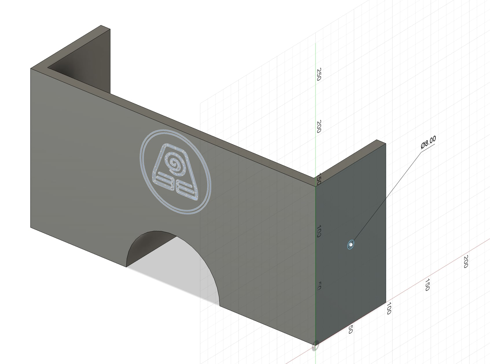
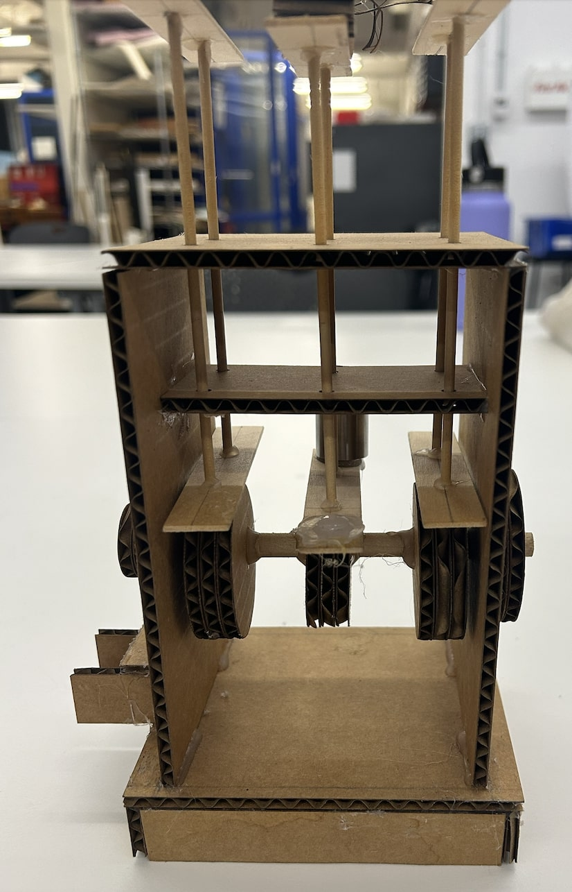
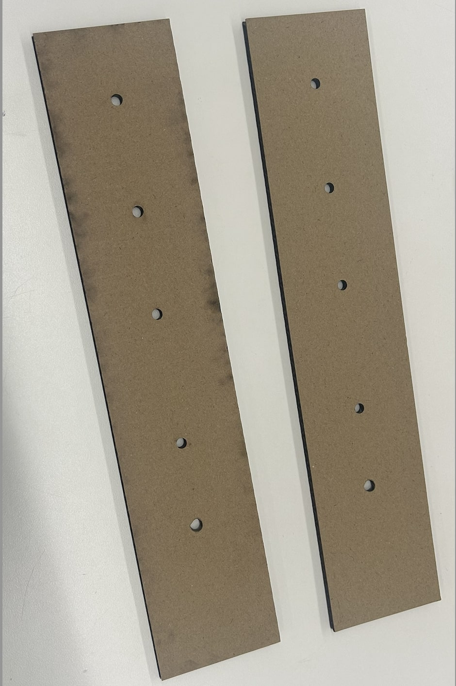
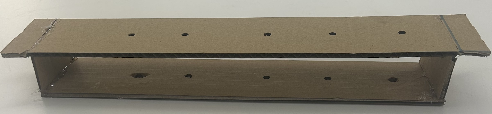
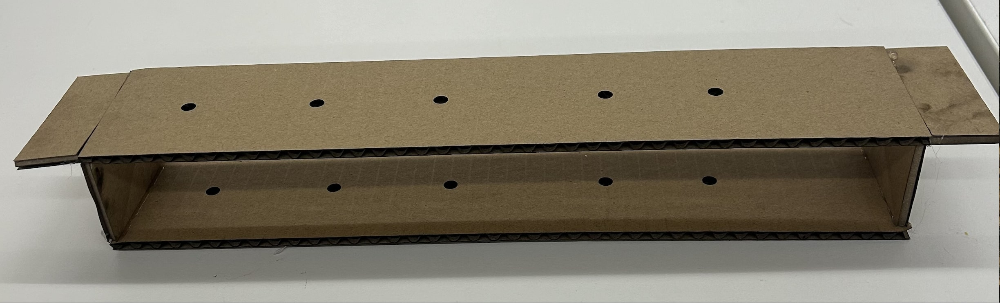
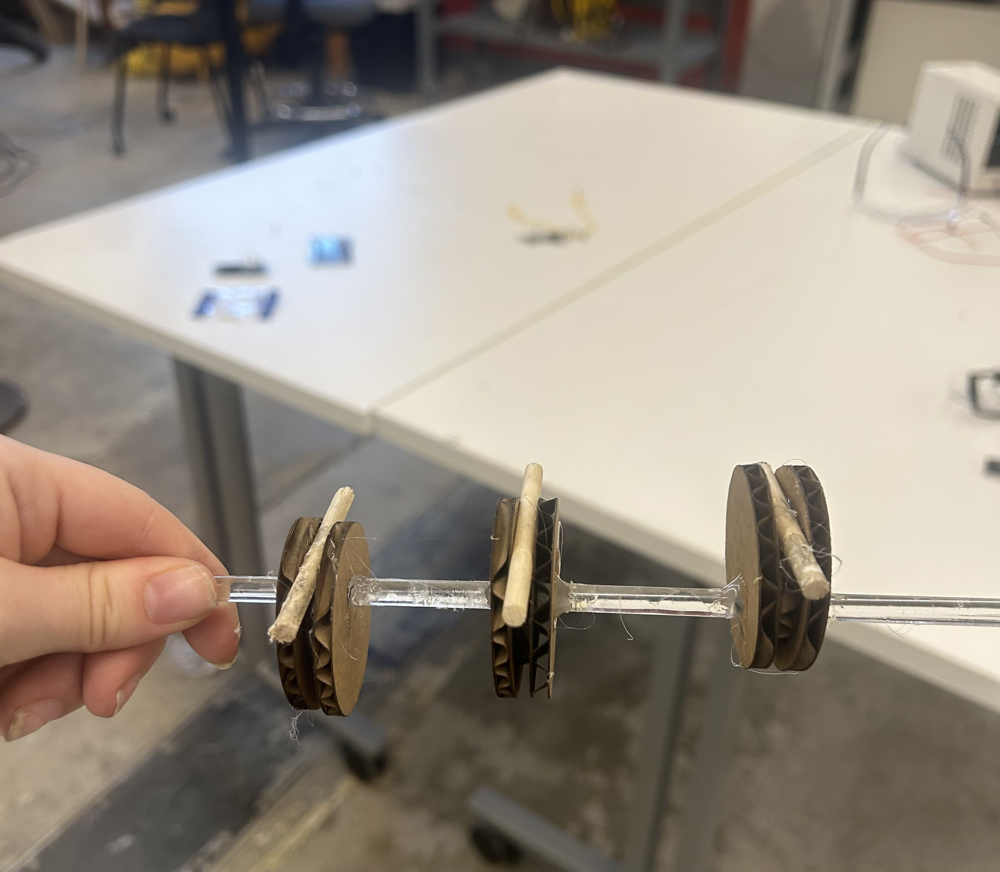
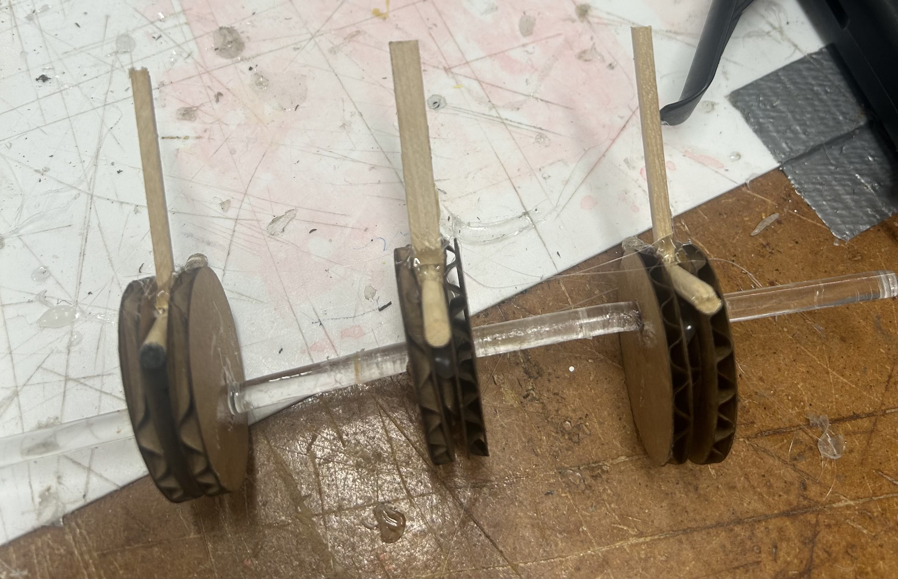
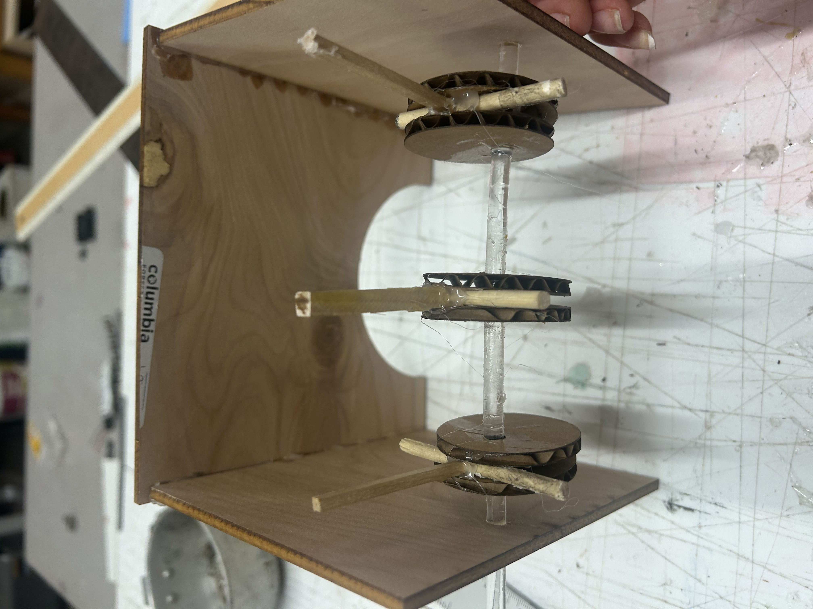
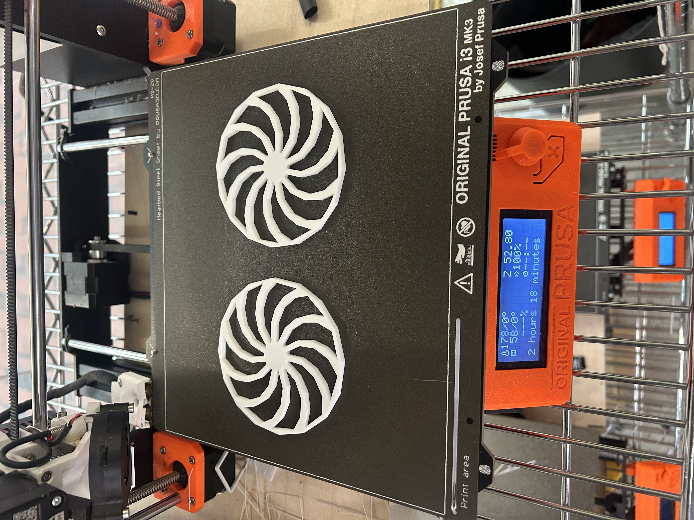
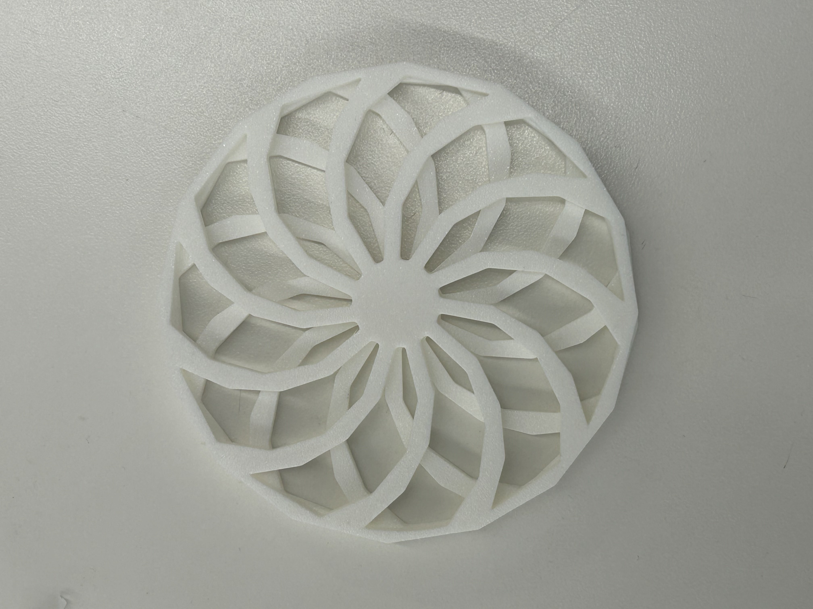

Week 3: Hand Tools and Fabrication
Kinetic Sculpture
This week’s kinetic sculpture required a lot of time and multiple iterations to get it to a semi-functional point. Next week, I aim to create a finalized iteration.
My Idea
I was inspired by this video to create an Avatar-esque earth-bending kinetic sculpture in which there was a rotating system that simulated the effect of pushing earth up from the ground in a sequential pattern.
To begin, I started by designing my box/stage in Fusion with my earth bending symbol design engraved into the box. I needed to laser cut multiple versions of this box to adjust the hole sizes on its two sides.
This CAMS system inspired the rotational aspect of my design. A wooden rod would be placed through my stage to form the core of this system and attached to the rod would be various laser cut circles offset from each other. The idea is that the circles would be stable on the rod in set positions and when the rod rotates through a motor, the circles move up and down, with their heights offset one another, moving the smaller rods on top of them up and down in different directions.
Fabrication Process
The early issue I was running into was the hole size for my design. I measured the rod’s diameter to be 7.8 mm with calipers and knew that I would have to account for kerf so I laser cut circles to test different diameters including 7.2 mm, 7.4 mm, and 7.6 mm. With all of these measurements, the rod either did not fit through the hole or there was too much friction and so I made the hole size bigger to equal 8 mm. This measurement provided enough space for the rod to freely rotate and so after this testing, I laser cut a final version of my stage with the appropriate hole size as well as 15 circles.
In terms of the assembly, I thought through how I would want to offset my circles so that when the rod rotated, they would move in a desired way for my design. What I thought about was when the preceding circle was at its highest point in the rotation, I wanted the following circle to be slightly lower in height and offset from that so that when one circle comes up and then starts coming down, the next one would go up to its highest point as the preceding circle is coming down, simulating the effect you see in the video. It proved a struggle to place the circles in the exact spot that I wanted. Due to my system not being glued together, it was hard to hold all of the necessary pieces in place enough to ensure completely accurate placement. Although I did markings with pencil to get a pretty accurate placement of the circles, in future iterations, I will have to continue optimizing their placement to produce the desired motion.
Once that part of the CAMS system was secure, I moved on to the next part which was developing stabilized miniature rods that would move up and down based on the circles’ rotation and essentially push up my rocks. I had already laser cut two blocks of wood spanning the length of my box as well as rectangular legs to go underneath the mini rods. The first problem I ran into was once again finding the correct hole size. I measured the diameter of the rod to be 4.7 mm and found a drill bit that was the same size. I drilled 4.7 mm holes into the wood.
A second note is that I was also finding it incredibly difficult to manually line up the holes I was drilling into my wood with the middle of the circles. After several failed attempts, I decided to use Fusion to my advantage for a more accurate placement of the holes. With calipers, I measured the appropriate distances between the circles and between the circles and sides of the stage. Based on these measurements, I laser cut the 4.7 mm holes into my rectangles instead of drilling them.
Nevertheless, upon testing, this hole size was still providing a ton of friction, preventing the system from moving, and so I began using box cutters to begin opening the holes up. In future iterations, the hole size will be perfected.
The next problem I encountered was the assembly of this top part of the CAMS system. Due to the limited space of my box, I could not attach the stabilizing rectangular pieces and then slide in the rod with the foot attached to it. What I then did was create a box in which both of these rectangular pieces were attached to each other and then added two lips. My idea was that this box could be slid in and out for easier assembly.
This box was very DIY and made with a box cutter. I wanted to make the circles and design overall more streamlined to ensure more accuracy in my design. Thus, I remade the box design in fusion and laser cut it out, leading to a better product.
Once my system was mostly assembled, I began testing out the motion. Unfortunately, while some of the rods were moving as expected, others were encountering heavy friction. I also noticed that the feet attached to the bottom of the miniature rods were rotating and interfering with each other. This led me to use a saw to cut them into smaller squares so that they didn’t interfere with each other as much.
I did this and it still didn't work. I noticed that the feet were just not stable and their rotation was causing heavy friction. Thus, I decided that I needed to print 2 additional circles that were slightly larger than my current circles to form walls that restricted the motion of the feet. With the first print I did, the outer circles were too large and kept coming in contact with the box. This led me to minimize the size of my circles considerably so that this friction was prevented in my next print.
This video shows a proof of concept with my new circles that have the restricting border. It took me all week to get the mechanism right. However, now that I know that it can work with one rod, I can continue replicating this design and next week, move towards having a final earth-bending product.
Here is the same proof of concept video powered by a motor this time. To attach the motor, I had to laser cut circles with an adaptor cut inside them that could fit a motor.
Kinetic Sculpture Part II: Redemption??
Out of all the weeks of PS 70, this project definitely gave me the most trouble and so I revisited it to try out a second iteration.
I did not have the materials from my previous kinetic sculpture as I threw them out while cleaning :( how dare I. However, I knew what I did wrong last time and so it was time to just replicate the process. I grabbed an acrylic axle that measured 6 mm and began.
The first step was to laser cut the cardboard circles that would be offset from each other. I learned last time that I needed to cut two larger circles and one smaller circle in the middle so the two larger circles could serve as stabilizers. Due to the shorter length of the axle, I could only do three instead of the four or five I had in my previous iteration.
After the stabilizers were printed out, I secured them onto the axle with hot glue. I then secured wooden rods between the stabilizers in the same manner as before.
Next, I used hot glue to again secure wooden rods on top of the wooden rods I had just secured. There was really limited wood material at the end of the semester in the makerspace so the sizes are a little uneven!
Once I got to this point, I really wanted to make sure my motor correctly spun the axle before I began assembling anything.
The first step was to create a coupler to bridge the DC motor to the axle. I found a schematic of the motor online, imported it into fusion, and recreated the exact dimensions in my coupler design. I also included a hole on the other side with the same diameter as the axle. After my 3D model of the coupler was completed, I 3D printed it!
The second step was to actually get the motor spinning. I hooked up the motor according to Nathan’s guide on the PS-70 website and also used the code provided in the guide. Here was the motor working properly:
I then attached the motor and axle to each other through my coupler and everything seemed to be working correctly and so I began going to work on my assembly. Since my axle was sizably smaller, I had to modify the sizing of my previous Avatar casing. I laser cut three new pieces for the front and two sides of the enclosure and glued them together. I then put my axle through.
Everything is going according to schedule, right. Nope!
When I tested the spinning, I realized that the wooden rods were too long and were hitting against the front of the enclosure instead of spinning all the way around. I had to once again laser cut the side pieces about 30 mm longer. But now I finally had enough space!

The final part of my assembly was laser cutting three pieces of wood to place on top of my wooden rods to simulate rocks. My initial vision was that in Avatar, there are floating rocks that move and spin in the air through earthbenders. Although the final product did not completely match my vision, it was definitely substantial progress from my first iteration and there was successful motion!
Here is one perspective of the kinetic sculpture:
And another:
If I were to produce another iteration of this, I definitely would make the rocks move differently. Instead of making them rotate fully, I would want them to just move up and down.
Building A Second Kinetic Scultpture For Fun!
I was still not completely pleased with how my second iteration of the Avatar kinetic sculpture turned out and I wanted to keep practicing making them. I got inspired by this youtube video and wanted to make a similar kinetic sculpture. How these kinetic sculptures work is they feature two identical spiral wheels rotated in opposite directions and mounted to a gearbox. The idea is that when the wheels spin, constructive interference will create a visual illusion!
I began this kinetic sculpture by modeling my spiral wheel in Fusion. In my first iteration, I decided to print the two wheels on top of each other.
Don’t do that!
Although my print came out successful, I could not remove all of the supports required to merge the two wheels. Only the Hulk could accomplish this task.
So I reprinted the two wheels separately without supports!
I then overlaid them on top of each other and glued them together.
The next step was to attach my design to an axel. I used the same axle as my previous kinetic sculpture and reprinted another DC motor coupler using the same design. Next, I also laser cut some 6 mm nuts because we did not have any in the makerspace. After I had my three 6 mm nuts, I used them to secure my two wheels to the axle and then to secure the coupler to the axle. Following this, I just cut off the remaining part of the axle with a saw. The final step was to attach my motor!
Here you can see my finished kinetic sculpture. I realized after that I probably should not have glued the two wheels together as I think this may have degraded the optical illusion effect. However, it was still a cool pattern!